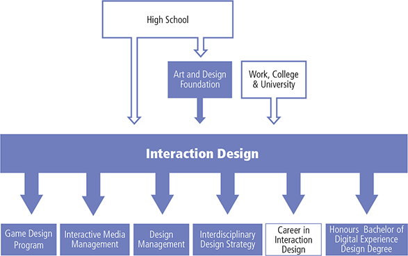

Overview
The Interaction Design and Delvelopment is a program that is emerging into being the future of design. This program will help you to learn all necessary skills that you need to learn to be a designr in this world. Currently taking this program myself I find it is a very good program to be in as it gives you lots career options. A Career choice that I plan to do after I graudte the program is doing something that involves working with stats,infographics and mapping.

Location
Waterfront Campus Daniels Building, Toronto, Ontario
Years Of Study
4 Years (8 semesters)
4th year Field Palcement Optionally
Career Pathways
Moblie Designer, Web Designer, 3D Modeling Designer, Motion Desinger
The Career pathway that IU am interested in
Contact Us
Phone: (416) 415-5000 Toronto, Ontario Waterfront Campus 3 Lower Jarvis St.
For more information on the program please contact the Program Co-ordinator: Xavier Masse ext. 3281